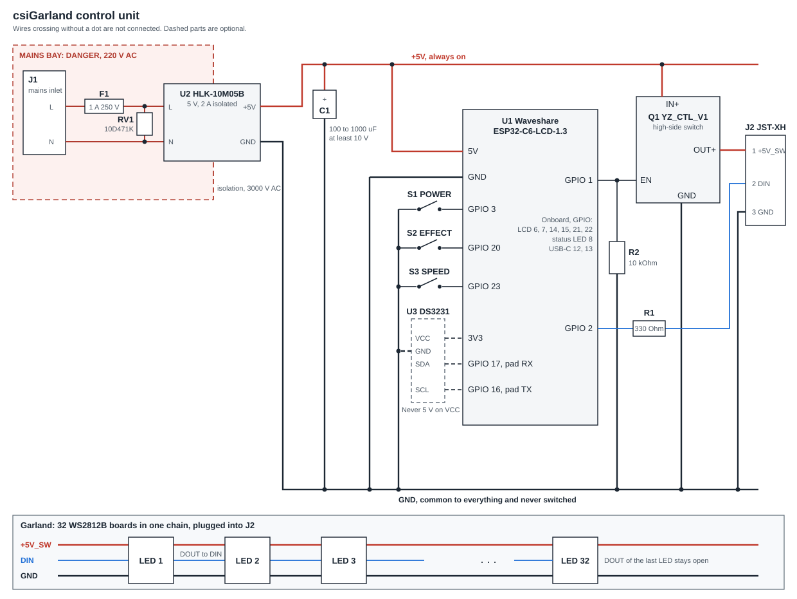

Documents
Read before you build, or while you use it
The documents live with the sources, so they always describe what the code does. Each link opens the current one on GitHub.
For owners
- User GuideThe buttons and the screen, getting into the portal, every portal page, the schedule, updates, and what to do when something goes wrong.
- The csiGarland UtilityFinding and pairing a garland, every page, tuning an effect with a preview, updates from a file or the catalog, and the garland's log.
- Effects GuideEvery built-in effect by group, the file format of an effect, and how to tune or add one.
- SecurityWhat the garland protects, the limits it accepts, and how to report a problem.
For builders and contributors
- ArchitectureHow the firmware works: tasks, startup, power, the portal and its API, updates, failures and the accepted risks.
- Building a Fork and the First FlashTools, your own signing certificates, the first flash and its one irreversible step, and every script.
- Building a Release Again, to the ByteHow anyone builds a published firmware and utility again from a clean fork, and shows them the same as the release.
- Building the HardwareThe schematic, the full bill of materials, wiring, the garland's cable, and the checks before and after power.
- Hardware SpecificationThe board, supply, LEDs, power gate and limits, and how they fit together.
- Control UnitThe enclosure, its inlet, the electrical schematic and pinout, and the portal's routes.
- Optical Design and DiffusersHow light spreads through translucent PETG, and every figurine's model and print settings.
- 3D ModelsThe OpenSCAD sources, the STL files and the Bambu Studio projects of the enclosure and the figurines.
- Public API
/api/v1/: finding a garland, trusting and pairing with it, every route, and the log. - ContributingSetting up, checking and proposing a change, and the rules a change follows.
- Roadmap and To DoWhat is planned, what is left to see working on the board, and what is left to measure.
Schematic
